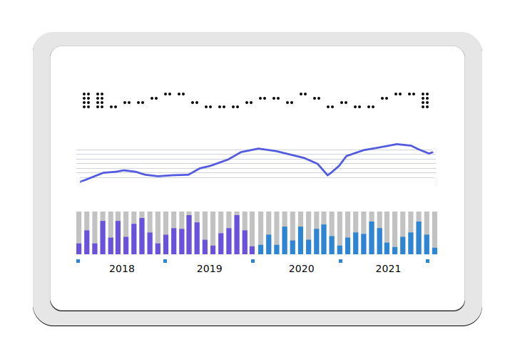

The Sensory Interface project aims to help people with certain disabilities (visual impairment, dyscalculia, ADHD) understand tabular numerical data such as spreadsheets.

In today’s world, where data is ubiquitous, we view data accessibility
as a basic human right. The Sensory Interface project aims to provide an
interface to numerical data for any purpose, be it Scientific Research,
Software Development, Education etc.
This data is typically visualized using graphs, charts, heatmaps etc.
You could think of these visualizations as the visual interface to the
data. We aim to provide a multi-sensory interface to the data. This
interface uses sound and touch, in addition to the visual channel, as a
means to convey the same underlying data.
Our hope is that by doing this, we will make work in fields such as
Scientific Research, Data Science and Machine Learning accessible to
people with certain disabilities.
Developing team: Ofer Bartal, Mohammad Suliman This project is run
by The Public Knowledge Workshop (a nonprofit).
For more details and collaborations, please send an email to:
info@sensoryinterface.com